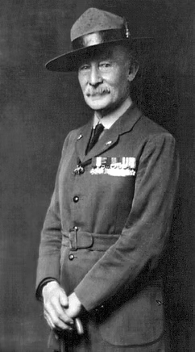
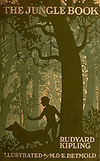
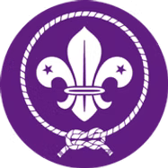

Escultismo
Un movimiento juvenil internacional basado en la formación integral del individuo.
Hay más de 40 millones de Scouts, jóvenes y adultos, hombres y mujeres, en más de 200 países y territorios. Unos 500 millones de personas han sido Scouts, incluidas personas destacadas en todos los campos.
Inicios del Escultismo
Comienzos tempranos. Todo esto comenzó con 20 niños y un campamento experimental en 1907. Se llevó a cabo durante los primeros nueve días de agosto de 1907 en la isla de Brownsea, cerca de Poole en Dorset, Inglaterra. El campamento fue un gran éxito y le demostró a su organizador, Robert Baden-Powell, que su entrenamiento y sus métodos atraían a los jóvenes y realmente funcionaban.
En enero de 1908, Baden-Powell publicó la primera edición de Escultismo para muchachos. Fue un éxito inmediato y desde entonces ha vendido más de 100 millones de copias, convirtiéndolo en uno de los libros más vendidos de todos los tiempos. Baden-Powell solo había tenido la intención de proporcionar un método para entrenar a los niños, algo que las organizaciones juveniles existentes como Boys Brigade y YMCA podrían adoptar. Para su sorpresa, los jóvenes comenzaron a organizarse en lo que se convertiría en uno de los mayores movimientos juveniles voluntarios en el mundo.
Expansión del Movimiento
El éxito de Escultismo para muchachos produjo un movimiento que rápidamente adoptó el nombre de The Boy Scouts. En 1909, el libro se había traducido a cinco idiomas, y una manifestación Scout en Londres atrajo a más de 11.000 Scouts. Como resultado de que Baden-Powell se tomó unas vacaciones en Sudamérica, Chile fue uno de los primeros países fuera de Gran Bretaña en comenzar el Movimiento Scout. En 1910 visitó Canadá y los Estados Unidos donde ya había comenzado.
El primer Jamboree Scout Mundial tuvo lugar en 1920 con 8.000 participantes y demostró que los jóvenes de diferentes naciones podían reunirse para compartir intereses e ideales comunes. Desde ese primer Jamboree Mundial en Olympia en Londres, ha habido otros 21 en diferentes lugares. Durante el Jamboree, se celebró la primera Conferencia Scout Mundial con 33 Organizaciones Scouts Nacionales representadas. La Oficina Scout Mundial se fundó en Londres en 1920.

Las Guerras Mundiales
Entre las dos guerras mundiales, el Movimiento Scout continuó floreciendo en todas partes del mundo, excepto en países totalitarios donde fue prohibido. Durante la Segunda Guerra Mundial, los Scouts llevaron a cabo muchas tareas de servicio: mensajeros, observadores de fuego, camilleros, recolectores de salvamento, etc. En los países ocupados, el Movimiento Scout continuó en secreto con los Scouts desempeñando papeles importantes en la resistencia.
El Programa Scout en Sus Orígenes
El escultismo comenzó como un programa para niños de 11 a 18 años de edad. Sin embargo, casi de inmediato, otros también quisieron participar. El programa Girl Guides se inició en 1910 por Baden-Powell. Una sección de Manada se formó para los niños más pequeños, utilizando el "Libro de la selva" de Rudyard Kipling. Para niños mayores, se formó una rama de Rover Scout.

Épocas Modernas
En los años 60, 70, 80 y 90, el Movimiento Scout en los países en desarrollo se desarrolló para convertirse en un programa juvenil diseñado para satisfacer mejor las necesidades de sus comunidades. Los Scouts se involucraron en temas como salud infantil, viviendas, alfabetización, producción de alimentos, prevención del abuso de drogas, integración de discapacitados, conservación ambiental y educación para la paz.
En 2007, el Movimiento celebró su centenario: 100 años de Movimiento Scout. Lo que comenzó como un campamento pequeño en la isla Brownsea es hoy un Movimiento en crecimiento con miembros en casi todos los países del mundo. A través de su combinación única de aventura, educación y diversión, el escultismo logra renovarse continuamente.
